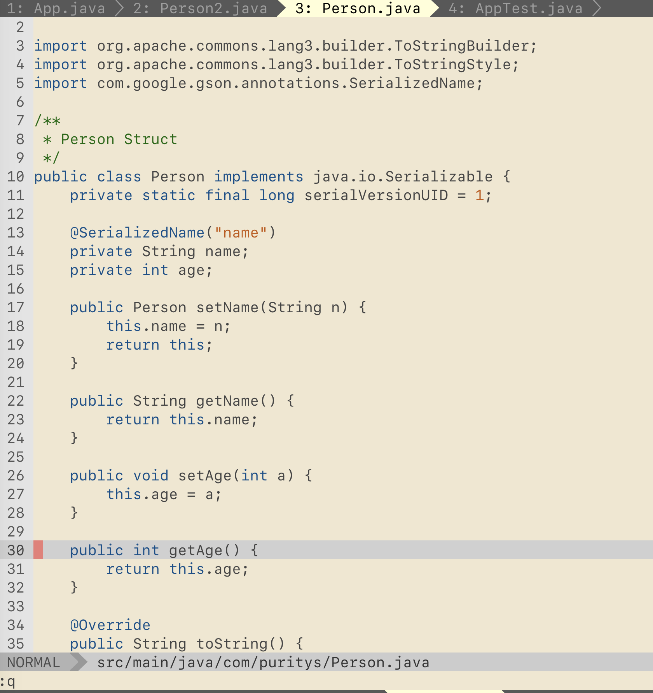

2020
Apr
28
Vim 有很多好用的 plugins ，不過好用的 plugin 不一定很好安裝，像是最早期的 YouCompleteMe(YCM) 只支援 python 3，只要你的 OS 沒有裝 python 3 就沒辦法安裝它，後來 YCM 有支援 Python2 但是安裝難度還是很高，幾乎不可能一鍵安裝成功，也因為 YCM 安裝實在是太困難了，才會想用 vim docker 來避免不同環境無法安裝 YCM 的問題，只要用 docker build 成功一次就可以永遠使用，不要再面對 YCM 安裝這個大魔王 (雖然我現在已經改用 ALE )。
沒有使用 docker image 前，每次新環境都要安裝一次下面這些 package / plugins，不但浪費時間，不小心還會漏掉或是安裝失敗：
- OS 裝中文字體- install fzf https://github.com/junegunn/fzf.vim
- install fasd https://github.com/clvv/fasd
- java / golang / php / c / compiler ...
- 安裝大魔王 YouCompleteMe
- ale eclipse.jdt
現在把 Vim 包成 docker image ，換新電腦或是註冊新 EC2 就不用再裝一次 vim plugins，完全不會有 plugin 安裝失敗的問題，不管在 mac / unix / windows 環境都能正確執行，怕新 plugin 影響到舊功能的話，就切一個新版號出來。
我的 vim docker hub: https://hub.docker.com/r/puritys/vimvim docker version
- latest: puritys/vim;latest
- stable: puritys/vim:stable
